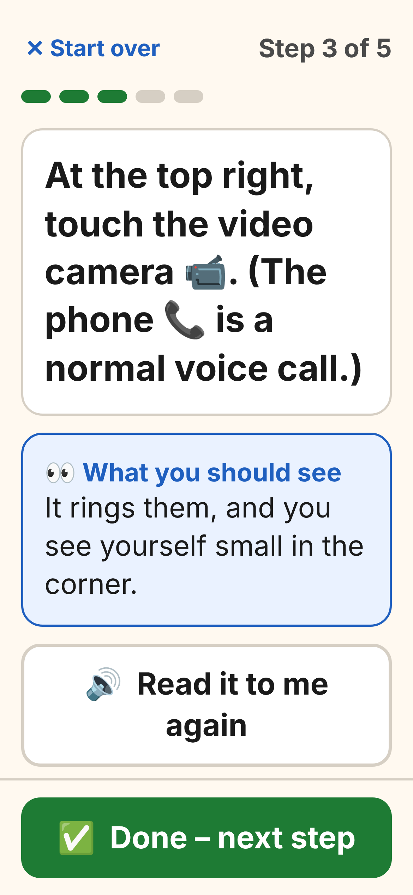

Video call on Christmas Day? Practise this week.
DECEMBER
17
Thursday
6pm:
practice video call with Sarah. Make the tea first!

I’ll talk you through it, one step at a time.
Ask Mavis
Practise with Mavis, every Thursday